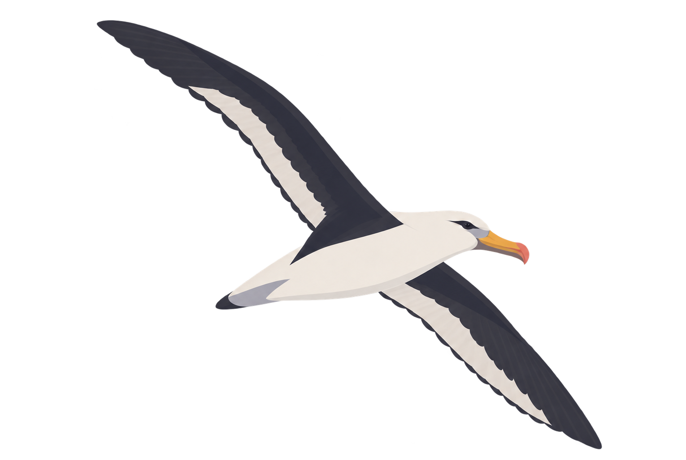
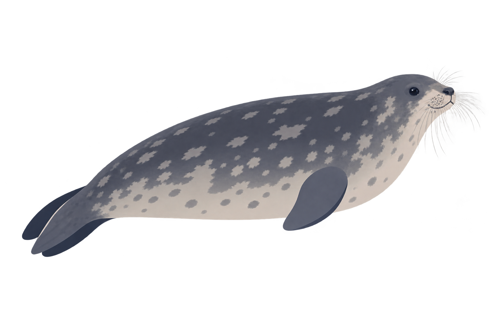

China National Geographic Voyages · Expedition Communication · 2026
Antarctic Peninsula Expedition
Four residents of the Peninsula
Before travellers meet Antarctic wildlife in person, they meet it on paper. These four illustrations introduce the species a Peninsula voyage is most likely to encounter: drawn to be recognised again at a distance, through binoculars, on ice and open water.
✓ Species identification and notes reviewed by the expedition team's naturalist experts

01 · Humpback Whale
Megaptera novaeangliae. A summer visitor to the Peninsula's krill-rich waters. Its pectoral fins are the longest of any whale, up to a third of its body length, and give the genus its name: "great wing".

02 · Chinstrap Penguin
Pygoscelis antarcticus. Named for the narrow black band under its head. Breeds in large, noisy colonies around the Antarctic Peninsula and feeds mainly on Antarctic krill.

03 · Black-browed Albatross
Thalassarche melanophris. A Southern Ocean wanderer with a wingspan of up to 2.5 metres. The dark stripe through its eye gives the species its name, and its permanently stern expression.

04 · Weddell Seal
Leptonychotes weddellii. The southernmost breeding mammal in the world. Weddell seals haul out on fast ice and dive to around 600 metres, keeping their breathing holes open in the ice with their teeth.
What to pack for the end of the world
Every traveller on the voyage receives this personal equipment checklist before departure: what the weather does at each stop, what the paperwork requires, and what to pack, layer by layer. The checklist was designed as one long illustrated sheet in Chinese. The full text is given in English alongside, so every item on the sheet can be read here.

Personal Equipment Checklist · Antarctic Peninsula Expedition · Full sheet
Good to know
- Reference temperatures. Auckland (transit): around 20°C. Buenos Aires: 16–24°C. Ushuaia: 4–13°C. Daytime landings in Antarctica: −5 to 5°C. Cabins on board: around 20°C.
- Time differences. Auckland is 5 hours ahead of Beijing time. Buenos Aires, Ushuaia and the Antarctic Peninsula are 11 hours behind.
- Communications. Activate international roaming in advance. Hotels provide WiFi, and WiFi on board is free of charge.
- Baggage allowance. One piece of checked luggage up to 23 kg, plus one carry-on up to 7 kg per person.
- Dressing for the cold. The Peninsula is cold and windy, with occasional snow. Several light layers beat one heavy garment, and body temperature rises while walking on landings. Dress more warmly for long periods on deck.
Essentials
- Valid passport, valid for at least 6 months beyond the travel date.
- Argentine paper visa: must cover every day of the trip and be within its validity period.
- US visa or Green Card entry: valid passport plus a valid US B1/B2 visa or US permanent resident card. If the US visa is in an old passport, bring the old passport too. Stays are capped at 30 days, and other US visa types, including F1, M and L visas, cannot be used for visa-free entry.
- Printed copies of the flight itinerary, hotel bookings, insurance documents and a personal emergency information card, with digital copies on your phone.
- Cash: USD 300–500 is enough, with small-denomination bills for tips. Argentine pesos can be exchanged locally.
- A credit card in your own name, an international card such as Mastercard or Visa.
Clothing · landing gear, built on layering
- Waterproof shell jacket, 1–2 (essential: waterproof, windproof, highly breathable. One 3-in-1 polar shell jacket is issued before the trip.)
- Waterproof trousers, 1–2 pairs (wide-legged enough to pull over landing boots, which can be borrowed on board free of charge)
- Thermal base layers and fleece-lined leggings, several sets (close-fitting, moisture-wicking, warm)
- Wool jumpers, fleeces and thin down jackets, several (easy to take on and off)
- Warm hat (ideally covering the ears)
- Scarf
- Outdoor face covering
- Fleece-lined waterproof warm gloves (photographers may also bring fingerless gloves)
- Warm socks, several pairs (a wool pair over a cotton pair is more comfortable)
- Ski goggles (recommended)
- Casual shoes for wearing on board
Outdoor gear
- Daypack or waist pack
- Waterproof backpack and camera cover
- Lightweight trainers for land excursions
- High-protection sunglasses
- SPF50+ sunscreen, moisturiser and lip balm (Antarctic UV is strong and the air is dry)
- Camera equipment: memory cards, tripod, spare batteries
- Binoculars for birdwatching and distant wildlife
- Packable raincoat or folding umbrella
- Phone and camera lanyards (so equipment is not dropped into the sea)
Personal items
- Toiletries (not provided on flights or on board)
- Slippers for indoor use
- Antibacterial wipes or hand sanitiser
- Seasickness medication
- Everyday medicines and personal prescriptions
- A personal thermos flask (electric kettles are not permitted)
- Universal travel adapter (a power strip if you have many devices)
- Swimwear (the operator arranges a polar plunge depending on weather)
- Sportswear (there is a gym on board)
- Earplugs, eye mask and inflatable pillow
- CCC-certified power bank (no more than 20,000 mAh / 100 Wh)
- Disposable hand warmers
- Books, films and music
- A small amount of sealed seasoning, to personal taste
Provided for you
- 3-in-1 polar shell jacket × 1
- Activity handbook × 1
- Antarctic reference book × 1
- Warm hat × 1
- Universal travel adapter × 1
- Luggage strap set × 1 and luggage tag × 1
- Postcard set × 1
- Group badges × 2
- Waterproof landing boots (provided on board, free to use)
The ship identity above is the programme's own mark, shown as the commissioning organisation.